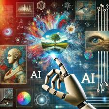
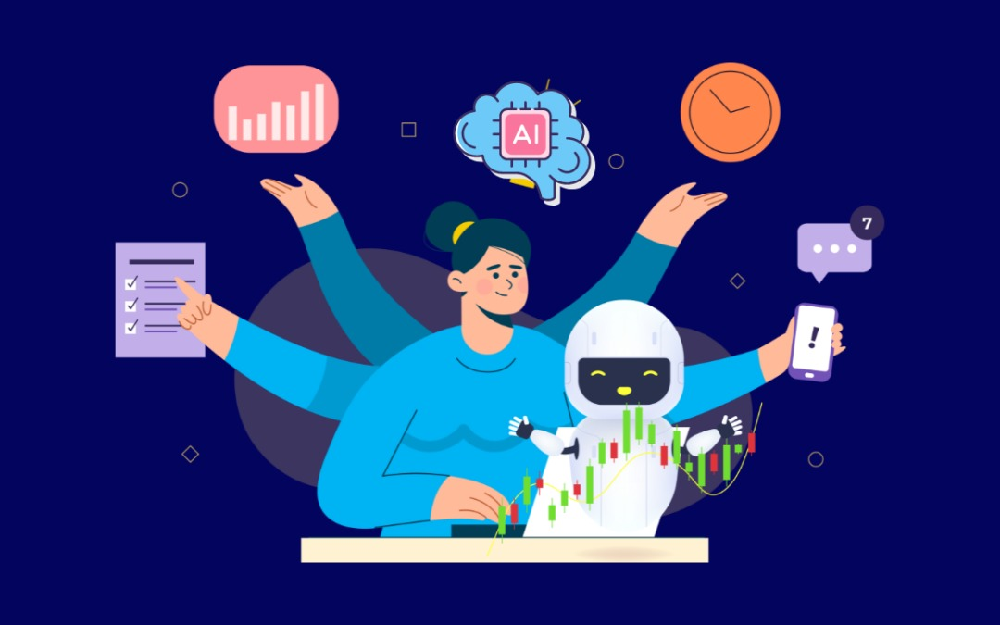
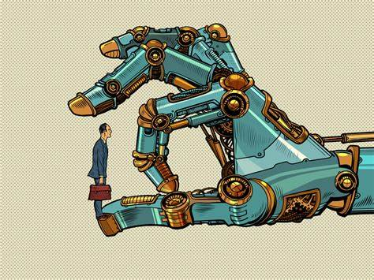
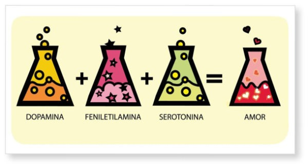

La inteligencia artificial (IA) es fundamental en la educación actual, ya que permite personalizar el aprendizaje, automatizar tareas y abordar desafíos educativos, mejorando así la calidad de la enseñanza.
Personalización del Aprendizaje
La IA permite adaptar el contenido educativo a las necesidades individuales de cada estudiante. Esto significa que los alumnos pueden aprender a su propio ritmo y recibir materiales que se ajusten a sus estilos de aprendizaje. Por ejemplo, plataformas como Duolingo y Khan Academy utilizan algoritmos de IA para ofrecer ejercicios y explicaciones personalizadas, lo que mejora la motivación y el compromiso del alumnado.
Automatización de Tareas Administrativas
La implementación de la IA en la educación también ayuda a los docentes a gestionar su carga de trabajo. Herramientas de IA pueden automatizar tareas como la calificación de exámenes y la gestión de registros, permitiendo a los educadores centrarse en actividades más interactivas y en la atención personalizada a los estudiantes.
Abordaje de Desafíos Educativos
La IA tiene el potencial de abordar algunos de los desafíos más significativos en la educación actual, como la desigualdad en el acceso a recursos educativos. La UNESCO destaca que la IA puede contribuir a la inclusión y equidad en la educación, asegurando que todos los estudiantes tengan acceso a las mismas oportunidades de aprendizaje.
Análisis de Datos Educativos
Además, la IA facilita el análisis de grandes volúmenes de datos, lo que permite a los educadores identificar patrones de comportamiento y rendimiento de los estudiantes. Esto ayuda a detectar áreas donde los alumnos pueden necesitar apoyo adicional y a implementar intervenciones efectivas.
Consideraciones Éticas y Desafíos
A pesar de sus beneficios, la integración de la IA en la educación también plantea desafíos, como preocupaciones sobre la privacidad de los datos y la equidad en el acceso a la tecnología. Es crucial que la implementación de la IA se realice de manera ética y centrada en el ser humano, garantizando que todos los estudiantes se beneficien de estas innovaciones.
En resumen, la inteligencia artificial está transformando la educación al ofrecer herramientas que personalizan el aprendizaje, optimizan la gestión docente y abordan desigualdades, lo que promete un futuro educativo más accesible y eficiente.
| INTRODUCCIÓN | |
|---|---|
| |
| VENTAJAS | DESVENTAJAS | ||
|---|---|---|---|
| Automatiza tareas repetitivas y pesadas Aumenta la eficiencia y ahorra tiempo Toma decisiones con base en muchos datos Funciona 24/7 sin cansarse |  | Puede quitar empleos Falta de creatividad y emociones Alto costo de desarrollo. Riesgos de errores graves |  |
| CONCLUSIÓN | |
|---|---|
| En conclusión, la inteligencia artificial representa una herramienta poderosa que transforma diversos aspectos de nuestra vida cotidiana y ofrece soluciones a problemas complejos. Sin embargo, su desarrollo implica responsabilidades éticas y sociales, por lo que es fundamental asegurar un uso consciente, justo y beneficioso para toda la humanidad. | |
En esta Unidad de Aprendizaje se llevo a cabo una comparación sobre un libro llamado "la bioquímica del amor (la química de cupido)" e información de la inteligencia Artificial sobre "los procesos bioquimicos del amor en el cerebro" y por ultimo se puso cual fue mas util con su información
| La Química de Cupido. Enumera los puntos más importantes del artículo. | Procesos Bioquímicos del amor en el Cerebro. Enumera los puntos más importantes del ensayo. | Cuál te brindó la información más útil para tu vida actual y por qué. Enuméralos. |
| El estudio del amor se trasladó a ciencias como la bioquímica en los 90s. | La adolescencia es un tiempo de grandes cambios y emociones intensas, donde el amor destaca como una experiencia poderosa. | Ensayo de la IA: Porque se centra en los procesos bioquímicos específicos del cerebro adolescente, lo cual es más directamente aplicable a la comprensión de las relaciones |
| El amor involucra una serie de factores químicos que promueven el "enamoramiento". | Neuroquímicos como la dopamina y la norepinefrina son responsables de las sensaciones de atracción y euforia. | Ambos: Ambos son útiles, pero el ensayo profundiza en las implicaciones del papel de la dopamina en el contexto adolescente (impulsividad, etc.). |
| La "Fórmula Química de Cupido" se compone de cuatro etapas, tres de ellas comunes al amor y la amistad, y la última exclusiva del amor erótico. | La dopamina está estrechamente ligada a los circuitos de recompensa y puede generar comportamientos similares a la adicción. | Ambos: Ambos explican la influencia de las hormonas, pero el ensayo lo relaciona más con los cambios hormonales de la adolescencia. |
| La primera etapa, la "Primera Impresión", está fuertemente influenciada por la vista y el olfato, a través de las feromonas. | Las hormonas, como la testosterona, el estrógeno, la oxitocina y la vasopresina, desempeñan papeles cruciales en el proceso del amor. | Ensayo de la IA: Porque detalla cómo el desarrollo del cerebro adolescente afecta la toma de decisiones y la regulación emocional en las relaciones. |
| Las feromonas, segregadas principalmente por las glándulas sudoríparas, contribuyen al "aroma humano" individual. | La oxitocina, a menudo denominada la "hormona del amor", facilita el establecimiento de vínculos y la confianza. | Ensayo de la IA: Porque explora la conexión entre el estrés de las relaciones y el desarrollo adolescente. |
